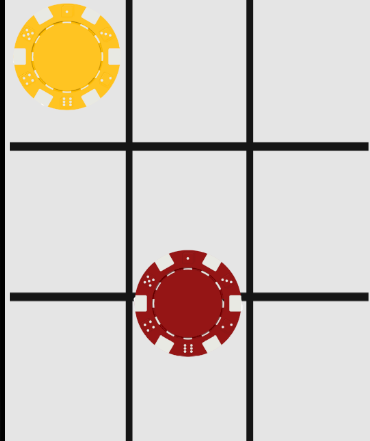
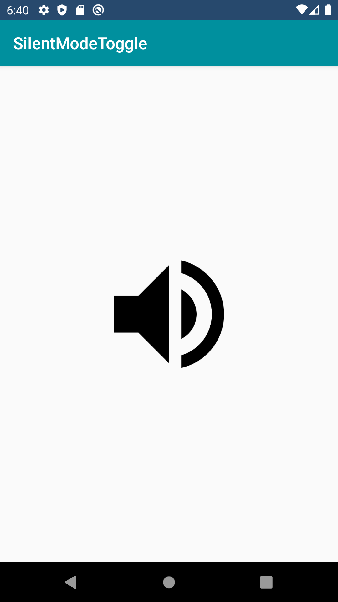

Android Projects
Connect 3
As the name suggest Connect 3 counter of the same color and you win!
Silent Mode Toggle


I made this is An App as well as a Widget, Toggles Silent mode in your phone but does not mute your media volume.